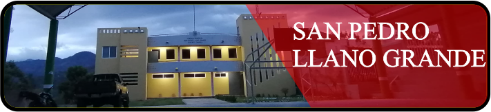
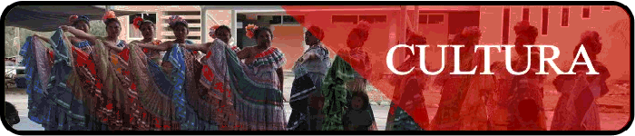

 |
 |
Ubicacion de la comunidad de San Pedro Llano Grande
Este distinguido pueblo pertenece a la comunidad de santa María cuquila Tlaxiaco Oaxaca y colinda al lado sur con la comunidad de san Isidro, al lado este con agua zarca, al norte con Benito Juárez y oeste a plan de Guadalupe. Con 350 habitantes humildes respetuosos solidarios y sobre todo muy amables con una increíble clima |